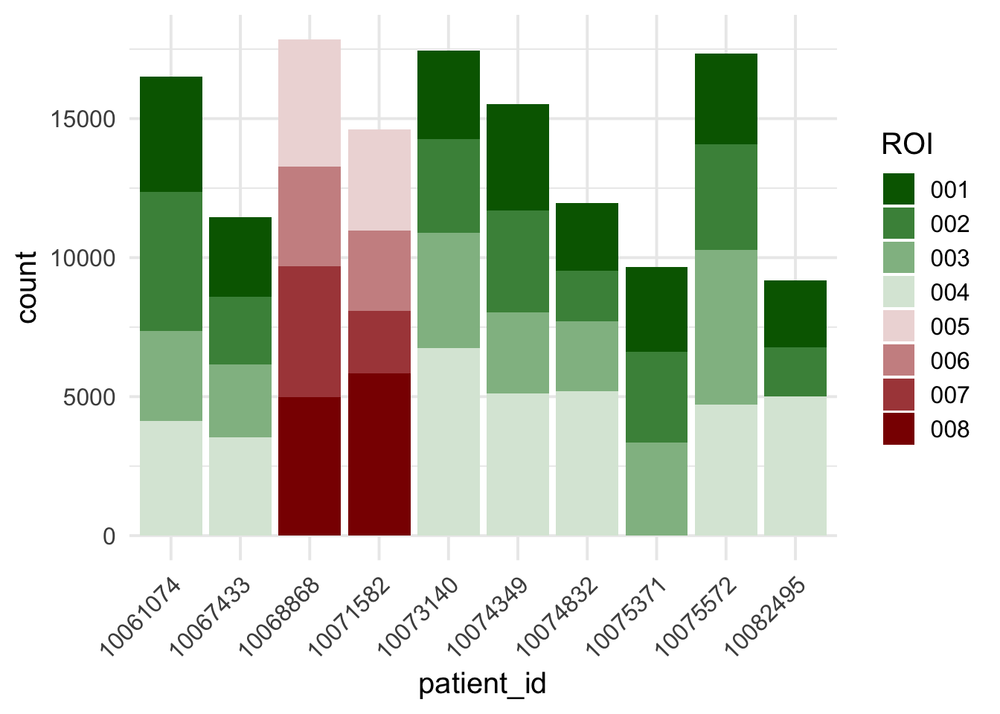
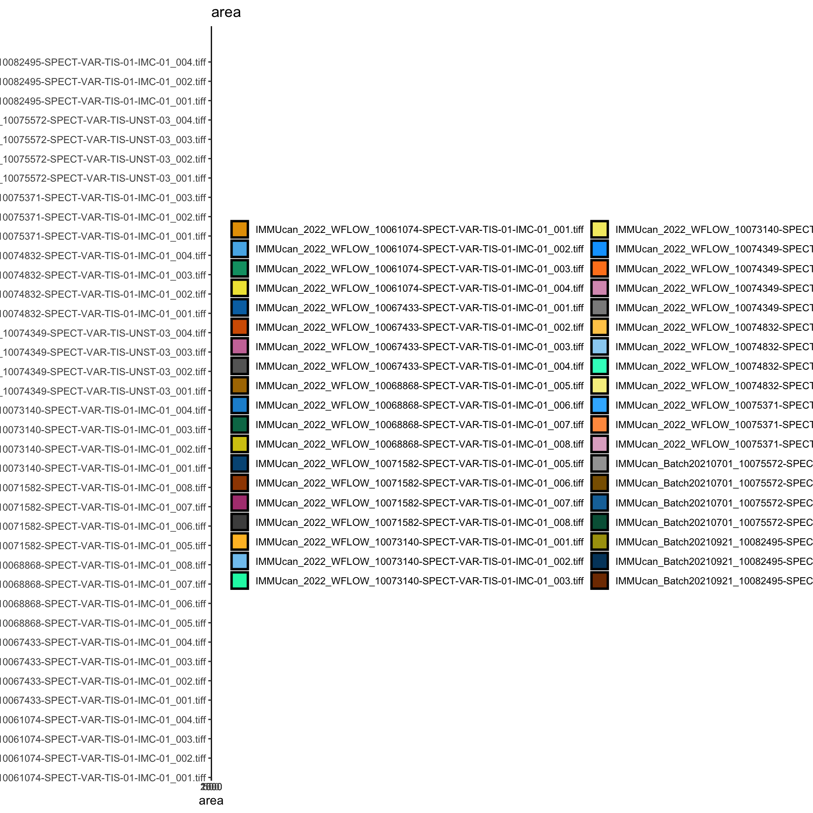
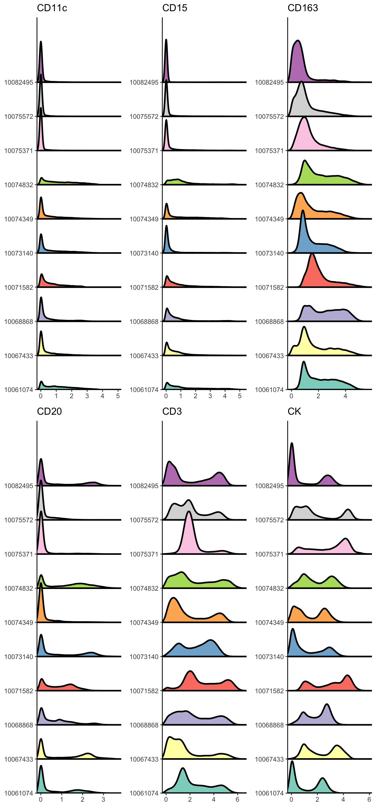
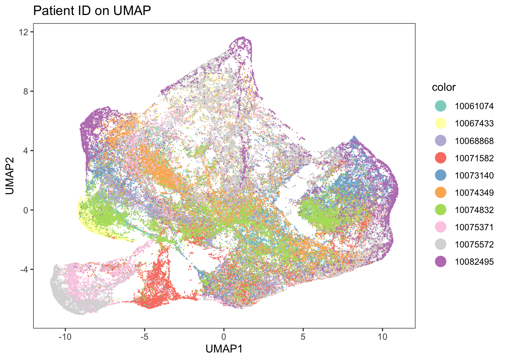
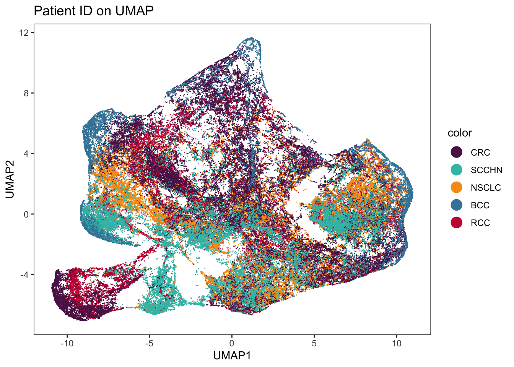
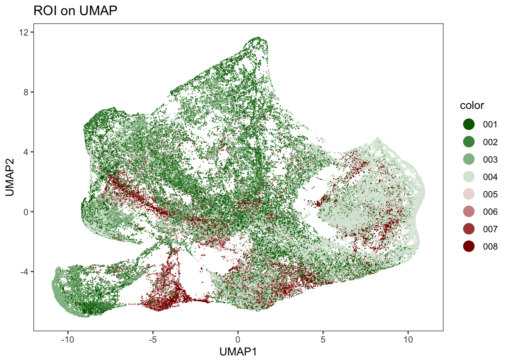
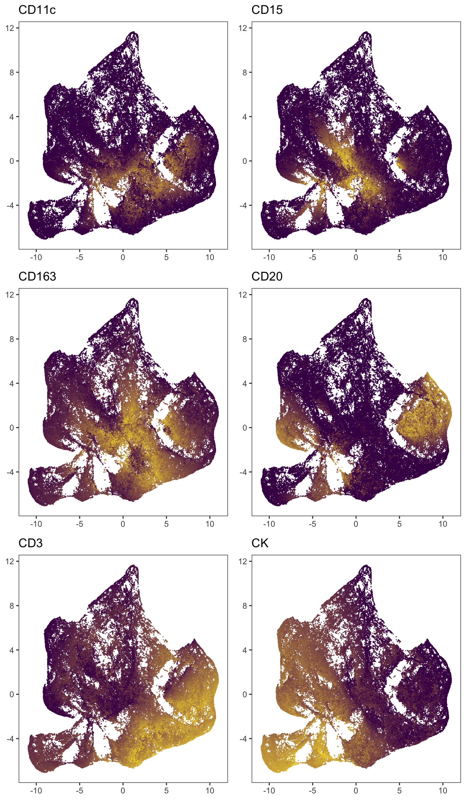

Last updated: 2022-10-25
Checks: 6 1
Knit directory: Analysis/
This reproducible R Markdown analysis was created with workflowr (version 1.7.0). The Checks tab describes the reproducibility checks that were applied when the results were created. The Past versions tab lists the development history.
The R Markdown file has unstaged changes. To know which version of
the R Markdown file created these results, you’ll want to first commit
it to the Git repo. If you’re still working on the analysis, you can
ignore this warning. When you’re finished, you can run
wflow_publish to commit the R Markdown file and build the
HTML.
Great job! The global environment was empty. Objects defined in the global environment can affect the analysis in your R Markdown file in unknown ways. For reproduciblity it’s best to always run the code in an empty environment.
The command set.seed(20220429) was run prior to running
the code in the R Markdown file. Setting a seed ensures that any results
that rely on randomness, e.g. subsampling or permutations, are
reproducible.
Great job! Recording the operating system, R version, and package versions is critical for reproducibility.
Nice! There were no cached chunks for this analysis, so you can be confident that you successfully produced the results during this run.
Great job! Using relative paths to the files within your workflowr project makes it easier to run your code on other machines.
Great! You are using Git for version control. Tracking code development and connecting the code version to the results is critical for reproducibility.
The results in this page were generated with repository version d28bd4f. See the Past versions tab to see a history of the changes made to the R Markdown and HTML files.
Note that you need to be careful to ensure that all relevant files for
the analysis have been committed to Git prior to generating the results
(you can use wflow_publish or
wflow_git_commit). workflowr only checks the R Markdown
file, but you know if there are other scripts or data files that it
depends on. Below is the status of the Git repository when the results
were generated:
Ignored files:
Ignored: .DS_Store
Ignored: Alignment/
Ignored: IMC/.DS_Store
Ignored: IMC/Analysis/.DS_Store
Ignored: IMC/Analysis/.Rproj.user/
Ignored: IMC/Analysis/docs/.DS_Store
Ignored: comparisons/.Rproj.user/
Ignored: mIF/.DS_Store
Ignored: mIF/Analysis/.Rproj.user/
Unstaged changes:
Modified: comparisons/analysis/01_celltype_correlations.Rmd
Modified: comparisons/analysis/02_steinbock_comparison.Rmd
Modified: mIF/Analysis/analysis/01_read_data.Rmd
Modified: mIF/Analysis/analysis/02_quality_control.Rmd
Modified: mIF/Analysis/analysis/zzz_read_data.Rmd
Note that any generated files, e.g. HTML, png, CSS, etc., are not included in this status report because it is ok for generated content to have uncommitted changes.
These are the previous versions of the repository in which changes were
made to the R Markdown
(mIF/Analysis/analysis/02_quality_control.Rmd) and HTML
(mIF/Analysis/docs/02_quality_control.html) files. If
you’ve configured a remote Git repository (see
?wflow_git_remote), click on the hyperlinks in the table
below to view the files as they were in that past version.
| File | Version | Author | Date | Message |
|---|---|---|---|---|
| Rmd | 189eaa3 | nilseling | 2022-05-25 | Restructured for steinbock data |
Here, we will perform quality control on all samples with focus on batch effects, cell number per images and cell size.
First, we will load all relevant data and libraries.
library(tidyverse)
library(dittoSeq)
library(scater)
library(viridis)
sce <- readRDS("/Volumes/immucan_volume/processed_data/Panel_1/2022_WORKFLOW/mIF/steinbock/Rout/sce.rds")We will now visualize how many cells we detected per image and patient.
# Plot number of cells
colData(sce) %>%
as_tibble() %>%
group_by(patient_id, ROI) %>%
summarize(count = n()) %>%
ggplot() +
geom_bar(aes(patient_id, count, fill = ROI),
position = "stack", stat = "identity") +
scale_fill_manual(values = metadata(sce)$colour_vectors$ROIs) +
theme_minimal(base_size = 15) + theme(axis.text.x = element_text(angle = 45, hjust = 1))`summarise()` has grouped output by 'patient_id'. You can override using the
`.groups` argument.
# Numeric output
colData(sce) %>%
as_tibble() %>%
group_by(patient_id, ROI) %>%
summarize(count = n()) %>%
summary()`summarise()` has grouped output by 'patient_id'. You can override using the
`.groups` argument. patient_id ROI count
Length:38 Length:38 Min. :1780
Class :character Class :character 1st Qu.:2906
Mode :character Mode :character Median :3559
Mean :3725
3rd Qu.:4674
Max. :6738 We will now observe the distribution of cell sizes across all images.
colnames(sce) <- paste0(sce$sample_id, "_", sce$ObjectNumber)
dittoPlot(sce, var = "area", group.by = "image",
plots = "ridgeplot") 
summary(sce$area) Min. 1st Qu. Median Mean 3rd Qu. Max.
2.0 113.0 191.0 218.4 285.0 2535.0 We will now filter cells based on size.
sum(sce$area < 5)[1] 102sum(sce$area > 1000)[1] 289sce <- sce[,sce$area >= 5 & sce$area <= 1000]We will now visualize the expression differences between patients.
multi_dittoPlot(sce, vars = rownames(sce)[rowData(sce)$use_channel],
group.by = "patient_id", plots = c("ridgeplot"),
assay = "exprs",
color.panel = metadata(sce)$colour_vectors$PatientId)Picking joint bandwidth of 0.0773Picking joint bandwidth of 0.0779Picking joint bandwidth of 0.125Picking joint bandwidth of 0.089Picking joint bandwidth of 0.189Picking joint bandwidth of 0.166
We also compute a tSNE and UMAP of all cells to visualize potential sample effects.
set.seed(220525)
sce <- runUMAP(sce, subset_row = rowData(sce)$use_channel, exprs_values = "exprs")We can now visualize the patient IDs and expression on the UMAPs.
dittoDimPlot(sce, var = "patient_id", reduction.use = "UMAP", size = 0.2) +
scale_color_manual(values = metadata(sce)$colour_vectors$PatientIds) +
ggtitle("Patient ID on UMAP")
dittoDimPlot(sce, var = "indication", reduction.use = "UMAP", size = 0.2) +
scale_color_manual(values = metadata(sce)$colour_vectors$Indication) +
ggtitle("Patient ID on UMAP")
dittoDimPlot(sce, var = "ROI", reduction.use = "UMAP", size = 0.2) +
scale_color_manual(values = metadata(sce)$colour_vectors$ROIs) +
ggtitle("ROI on UMAP")
multi_dittoDimPlot(sce, vars = rownames(sce)[rowData(sce)$use_channel],
reduction.use = "UMAP",
assay = "exprs", size = 0.2,
min.color = viridis(2)[1], max.color = viridis(2)[2]) 
Finally, we will save the modified SingleCellExperiment
object.
saveRDS(sce, "/Volumes/immucan_volume/processed_data/Panel_1/2022_WORKFLOW/mIF/steinbock/Rout/sce.rds")
sessionInfo()R version 4.2.1 (2022-06-23)
Platform: x86_64-apple-darwin17.0 (64-bit)
Running under: macOS Catalina 10.15.7
Matrix products: default
BLAS: /Library/Frameworks/R.framework/Versions/4.2/Resources/lib/libRblas.0.dylib
LAPACK: /Library/Frameworks/R.framework/Versions/4.2/Resources/lib/libRlapack.dylib
locale:
[1] en_US.UTF-8/en_US.UTF-8/en_US.UTF-8/C/en_US.UTF-8/en_US.UTF-8
attached base packages:
[1] stats4 stats graphics grDevices utils datasets methods
[8] base
other attached packages:
[1] viridis_0.6.2 viridisLite_0.4.1
[3] scater_1.24.0 scuttle_1.6.3
[5] SingleCellExperiment_1.18.1 SummarizedExperiment_1.26.1
[7] Biobase_2.56.0 GenomicRanges_1.48.0
[9] GenomeInfoDb_1.32.4 IRanges_2.30.1
[11] S4Vectors_0.34.0 BiocGenerics_0.42.0
[13] MatrixGenerics_1.8.1 matrixStats_0.62.0
[15] dittoSeq_1.8.1 forcats_0.5.2
[17] stringr_1.4.1 dplyr_1.0.10
[19] purrr_0.3.5 readr_2.1.3
[21] tidyr_1.2.1 tibble_3.1.8
[23] ggplot2_3.3.6 tidyverse_1.3.2
[25] workflowr_1.7.0
loaded via a namespace (and not attached):
[1] ggbeeswarm_0.6.0 googledrive_2.0.0
[3] colorspace_2.0-3 ellipsis_0.3.2
[5] ggridges_0.5.4 rprojroot_2.0.3
[7] XVector_0.36.0 BiocNeighbors_1.14.0
[9] fs_1.5.2 rstudioapi_0.14
[11] farver_2.1.1 ggrepel_0.9.1
[13] fansi_1.0.3 lubridate_1.8.0
[15] xml2_1.3.3 codetools_0.2-18
[17] sparseMatrixStats_1.8.0 cachem_1.0.6
[19] knitr_1.40 jsonlite_1.8.2
[21] broom_1.0.1 dbplyr_2.2.1
[23] uwot_0.1.14 pheatmap_1.0.12
[25] compiler_4.2.1 httr_1.4.4
[27] backports_1.4.1 assertthat_0.2.1
[29] Matrix_1.5-1 fastmap_1.1.0
[31] gargle_1.2.1 cli_3.4.1
[33] BiocSingular_1.12.0 later_1.3.0
[35] htmltools_0.5.3 tools_4.2.1
[37] rsvd_1.0.5 gtable_0.3.1
[39] glue_1.6.2 GenomeInfoDbData_1.2.8
[41] Rcpp_1.0.9 cellranger_1.1.0
[43] jquerylib_0.1.4 vctrs_0.4.2
[45] DelayedMatrixStats_1.18.2 xfun_0.33
[47] ps_1.7.1 beachmat_2.12.0
[49] rvest_1.0.3 irlba_2.3.5.1
[51] lifecycle_1.0.3 googlesheets4_1.0.1
[53] getPass_0.2-2 zlibbioc_1.42.0
[55] scales_1.2.1 hms_1.1.2
[57] promises_1.2.0.1 parallel_4.2.1
[59] RColorBrewer_1.1-3 yaml_2.3.5
[61] gridExtra_2.3 sass_0.4.2
[63] stringi_1.7.8 highr_0.9
[65] ScaledMatrix_1.4.1 BiocParallel_1.30.4
[67] rlang_1.0.6 pkgconfig_2.0.3
[69] bitops_1.0-7 evaluate_0.17
[71] lattice_0.20-45 labeling_0.4.2
[73] cowplot_1.1.1 processx_3.7.0
[75] tidyselect_1.2.0 RcppAnnoy_0.0.19
[77] magrittr_2.0.3 R6_2.5.1
[79] generics_0.1.3 DelayedArray_0.22.0
[81] DBI_1.1.3 pillar_1.8.1
[83] haven_2.5.1 whisker_0.4
[85] withr_2.5.0 RCurl_1.98-1.9
[87] modelr_0.1.9 crayon_1.5.2
[89] utf8_1.2.2 tzdb_0.3.0
[91] rmarkdown_2.17 grid_4.2.1
[93] readxl_1.4.1 callr_3.7.2
[95] git2r_0.30.1 reprex_2.0.2
[97] digest_0.6.29 httpuv_1.6.6
[99] munsell_0.5.0 beeswarm_0.4.0
[101] vipor_0.4.5 bslib_0.4.0